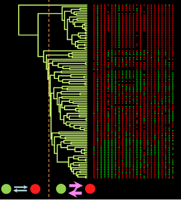

Adaptive landscapes on trees
G.G. Simpson's phenotypic adaptive landscape provides a conceptual framework for understanding the dynamics of trait evolution on both micro and macroevolutionary scales. This framework has been formalized at microevolutionary scales in the empirically-validated framework of evolutionary quantitative genetics. Futhermore, hypotheses regarding the macroevolutionary adaptive landscape have been applied to patterns of trait diversification at macroevolutionary scales. We work to better understand when, why and how adaptive landscapes change at macroevolutionary scales, and why these shifts occur.

We have developed an approach that uses Bayesian reversible-jump MCMC to detect shifts in the macroevolutionary adaptive landscape. The method is implemented in the software package bayou, which we are continuing to develop. Besides detecting shifts in adaptive landscapes, the Bayesian approach also enables users to use informative priors for analyzing trait evolution--providing a means to connect macroevolutionary models to biologically realistic parameter estimates. Our goal is to provide a variety of tools for understanding adaptive evolution on trees that integrate data from paleontological studies, neontological time-series, estimates of selection and genetic (co)variation, performance landscapes, and phylogenetic comparative data that can be used to better understand (multivariate) trait evolution.
Recently, we have further expanded bayou to detect shifts in allometric scaling relationships. The relationship between body size and metabolism, for example, is a well-studied relationship that is central to the Metabolic Theory of Ecology. We develop an approach that can test for the universality of the slope and intercept of allometric scaling relationships without specifying a priori the location of shifts. This enables us to understand when, where and (potentially) why shifts in allometries occur. We can then use Bayesian model selection to determine if ecological or life history predictors can explain away clade-level shifts, providing insight into the potential causes of changing scaling relationships. Our goal is to understand how changes in the environment and traits of organisms have resulted in fundamental changes in the flow of energy through organisms over the course of evolutionary history.

Many phenotypic traits of interest are only available in discrete character codings, which present a challenge for comparative biologists as they contain less information than continuous traits. My lab seeks to build tools that can find common patterns of divergence and diversification between discrete characters. In a recent study, we showed concerted evidence across traits for shifts in evolutionary rates that roughly align with the timing of the Great and Neoproterozoic oxygenation events in the history of cyanobacteria. We are working to further address the challenge of detecting and understanding the consequences of shared dynamics between discrete traits, in particular by leveraging the information found in phenotypic ontologies.
Quantitative Genetic Models
In addition to taking a top-down approach through phylogenetic comparative methods, Quantitative genetic theory provides a "bottom-up" approach for understanding connecting trait evolutionary models to make macroevolutionary predictions. Understanding how genetic (co)variation, selection and heterogenous adaptive landscapes lead to macroevolutionary consequences such as speciation and trait evolution are crucial questions for understanding when and why traits evolve, and when they do not.